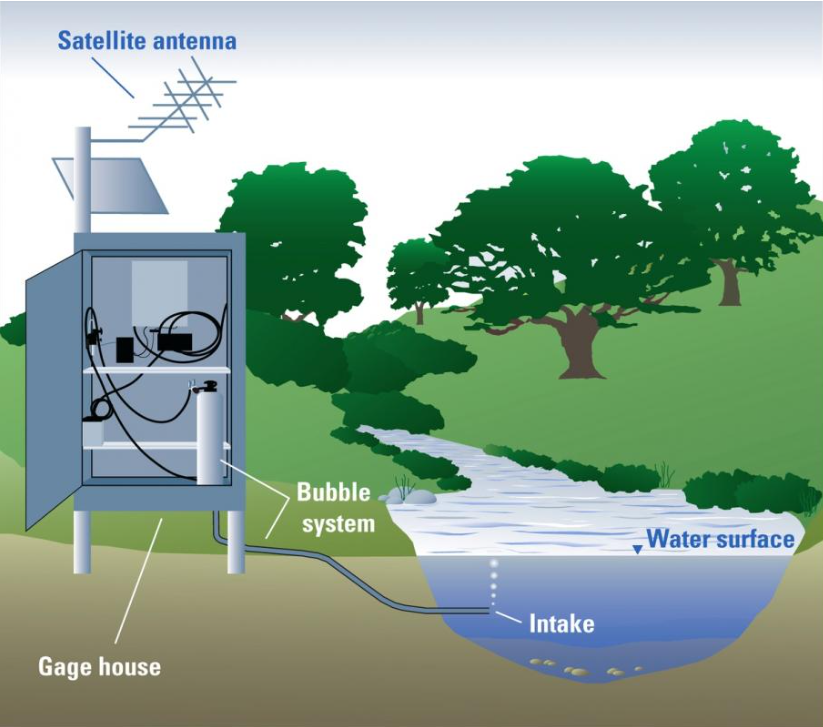
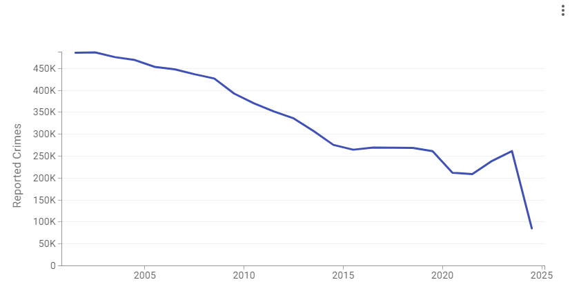
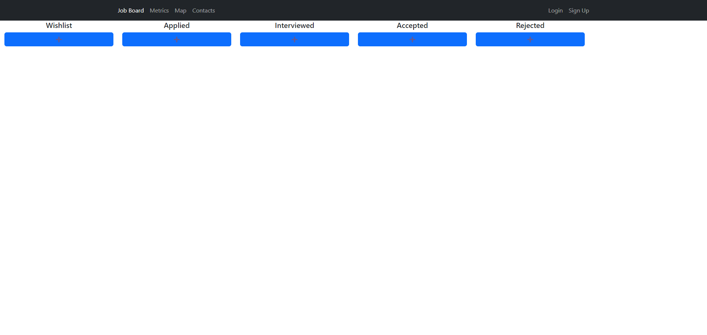

I build data-driven systems that transform complex data into scalable, reliable machine learning solutions. My work spans statistics, deep learning, and modern AI systems, with a strong focus on real-world impact.
I work across the full data science lifecycle — from exploratory analysis and feature engineering to modeling, evaluation, and production experimentation. I care deeply about building systems that are robust, interpretable, and scalable.

Interactive web app for monitoring and visualizing U.S. streamflow data.

End-to-end ETL pipeline and analytical workflow on multi-year crime data.

Job application tracking system built with React and Express.